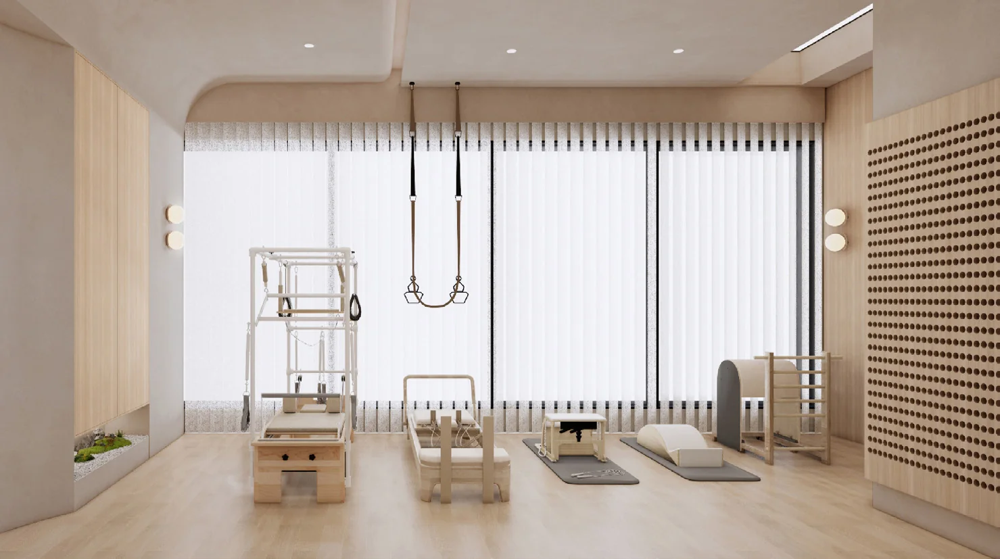
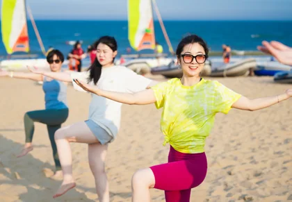

01把一小时，
品牌篇 · 美岸日常
把一小时，
放回城市生活。
用门店、人物和下班后的真实路线建立第一印象。拍出为什么忙完一天，还是想来。
首月 06 篇城市入夜，灯光亮起
留一小时给身体，也留给自己
01 / BRAND STRATEGY
先被看见，再被记住首月先建立品牌认知。
先让门店周边、对普拉提感兴趣的人认识美岸，知道这里有专业教练带练，也能想象下班后走进门店、跟着老师练完一堂课的样子。
美岸已有教练、器械普拉提课程、门店空间、骑行社群和海洋瑜伽节。首月从一堂真实晚课切入，用人物、课堂和活动档案呈现这些品牌资产。看完几篇，用户应当能说清楚美岸是什么，以及这里有什么让人愿意再来。
02 / CONTENT WORLD
三条内容线 · 一个生活方式品牌篇 · 美岸日常
用门店、人物和下班后的真实路线建立第一印象。拍出为什么忙完一天，还是想来。
首月 06 篇专业篇 · 一堂美岸课
跟进一次器械调整、一句课堂提示、一段动作变化。把专业拍具体，让新手看得懂。
首月 04 篇

活动篇 · 美岸同练
用已有骑行和海洋瑜伽节档案讲社群。次月起再加入活动招募与回顾。
首月 02 篇借鉴 Vuori 用人物与动作建立印象，用主题串联内容，再让「自在场」承接线下社群的做法。美岸以真实课堂为核心，把一堂课讲出名字、细节与余韵。
品牌表达 × 使用场景 × 社群体验01 / 05
03 / EDITORIAL NOTE
首月样稿 · 专业篇一堂美岸课
让“器械普拉提”成为读者能搜到的入口；让“力量有分寸”成为美岸自己的表达。用一次真实调整，写出教练如何观察、为什么换档、身体有什么不同。
一堂晚课里，教练有时会在器械旁停一下，看一遍滑床怎么出去，又怎么回来。她换一个弹簧档位，让学员把同一个动作再做一遍。
用多大的力，要看这一刻在练什么。变化有时很小，自己却能感觉到：推出去的时候，身体更有把握。回来的时候，也知道怎么慢慢收住。
美岸普拉提｜给身体留一小时04 / FIRST MONTH
每周三篇 · 持续四周周二 19:30 发品牌篇 / 周四 19:30 发专业篇 / 周日 10:00 发品牌或活动篇
前两周集中建立品牌和课堂印象，第三周开始呈现社群。
从下班街景、推门进店拍到第一组动作。一篇让人看见美岸是什么样的地方。
从教练课前问的第一个问题写起，跟拍第一次来的人怎样开始练习。
同机位拍两段光线、两组练习者和同一台器械。
请一位有真实互练或学习经历的教练出镜，拍她如何听反馈，再把所学带回课堂。
跟拍一次真实的弹簧调整，用教练的一句话说明为什么换档。
借年末盘点，记录会员或教练真实想留给自己的时刻，把同一个问题留给读者。
跟拍一位确实常来固定晚课的会员，从她的下班路线讲到为什么愿意空出这一晚。
用同机位拍同一课堂里的两位学员，呈现教练给出的不同提示。
从骑行档案里选一站，借参与者记得的一个细节讲清楚这群人怎样一起度过周末。
从课程结束开始拍。喝水、聊两句、翻下周课表，用真实的课后片刻回应首篇。
拍教练在某个动作上给出提示、学员调整后再做一次，请教练解释这个当下的选择。
从阿那亚海洋瑜伽节的海边宽景翻到垫子、衣角和人的表情，让参与者的视角带出活动。
人物标题在采访后定稿。年末话题留一个固定位置，临时热点最多替换当周一篇品牌内容。拍摄先在同城两家试点店集中采集教练、器械与真实课堂，再按周补人物和门店细节。整体用 3:4 真景摄影，取浅苔绿、米白与暖木色。
05 / SEARCH DESIGN
内容上线之前，先想好被怎样找到每篇笔记承接一种清晰需求。关键词自然进入标题、首屏和正文，再由真实教练与门店场景完成回答。
TITLE / SEARCH INTENT
标题用“器械普拉提”对齐搜索词，“力量有分寸”保留品牌表达。
品牌：美岸普拉提、美岸普拉提怎么样、美岸普拉提课程、美岸普拉提体验、MEIAN Pilates。
新手：零基础怎么开始普拉提、第一次上器械普拉提要准备什么、器械普拉提是什么、普拉提小班适合新手吗、第一次普拉提穿什么。
课程问题：器械普拉提弹簧阻力怎么选、教练怎么调整动作、普拉提一节课练什么、普拉提和瑜伽有什么不同。
同城商圈：北京朝阳普拉提体验课、深圳福田器械普拉提、[门店所在区]普拉提、[实际商圈/商场]普拉提、[商圈]普拉提体验课。上线前用实际门店地址替换方括号词。
检查已发布笔记的搜索来源或曝光、收藏、主页访问、评论与咨询；记录用户原话和实际搜索词，标注已覆盖、未覆盖或需改标题。初期样本少，不以单篇低互动判定栏目无效。
汇总搜索来源、曝光、收藏率、主页访问、有效咨询及门店反馈。保留持续带来搜索访问或具体咨询的词；有曝光无停留则改封面标题，有收藏无咨询则补门店与体验信息。后台若没有搜索词明细，以评论、私信和到店来源补充判断。
06 / LOCAL VOICES
门店 KOS · 把总部主题讲成本店现场同城先选两家试点门店，每店一位内容联系人。首月每店 2 篇 KOS，总部每两周供一次选题、封面和拍摄清单。
主题与标题方向
封面模板与拍摄镜头
可复用文案结构
店长安排采集时间
教练出镜讲课堂
用本店实景回应同城问题
品牌运营改稿与修图
官号署名推荐优质笔记
定期回看评论、咨询和到店反馈
首月 4 篇门店原创：试点店 A 与 B 各 2 篇。两家店能够稳定提供原创、也能接住用户问题后，再考虑增加频率或接入新门店。
07 / GROW WITH INTENTION
季度建立样板 · 半年拓展 · 一年形成品牌事件第一个月建立印象，第二个月给用户一次走进来的机会，第三个月验证什么值得持续做。按四周一个运营月估算，前三个月约 36 篇官号图文；门店 KOS 单独统计。
6 篇品牌、4 篇专业、2 篇活动档案。同城两店各做 2 篇 KOS。
用户能不能说出美岸是做什么的？记住的是教练、课堂还是空间？5 篇品牌、4 篇专业、3 篇活动。以首月真实问答做新手选题，试办 1 场器械普拉提开放日。
哪些内容带来报名？到场的人在体验前后最关心什么？5 篇品牌、4 篇专业、3 篇活动。连载会员与教练故事，复办一次反馈较好的活动，或试点美岸 × 莫纳双课。
哪两种图文值得连载？哪类活动值得复办？将试点过的内容、门店协作和活动做法，逐步带到更多有人员与素材条件的门店。形成季节主题、固定栏目、城市活动月历。
看活跃门店数、同城反馈及小红书来源的实际到场。建立四季内容体系，集中做成用户愿意记住、也愿意再次参加的品牌活动。优先评估延续海洋瑜伽节，把普拉提、瑜伽与城市社群接进年度主题。
看主动搜索或主页访问趋势、活动重复参与和用户原创内容。
08 / LEARN & REFINE
首月先把基线跑出来，再与主管共同校准以两家门店配合、能够安排基础拍摄、可查看账号后台为前提。
完成主页、3 篇置顶、12 篇图文和可复用的栏目视觉。上线前核对门店、课程和素材信息。
每周复盘一次。拉齐笔记发布后第 7 天的数据，记录品牌篇自然阅读中位数、专业篇收藏表现，以及后台可获取的主页访问趋势。访谈少量首次看笔记的目标用户，记录他们怎么描述美岸、记住了什么。
两店各发 2 篇原创，总部交付两批素材包，并沉淀至少 2 个可复用的门店选题。
如果用户只记住灯光和装修，次月就在品牌图文里更早让教练和课堂出现。
阅读、收藏与访问给出兴趣信号；用户原话帮助判断品牌有没有传达清楚。
次月在首月同类内容的数据基础上，和主管共同定改善目标。活动另看小红书来源的确认报名人数、实际到场人数及到场率。第三个月用这些结果决定哪些栏目继续做、哪类活动值得复办，以及门店协作何时扩大。